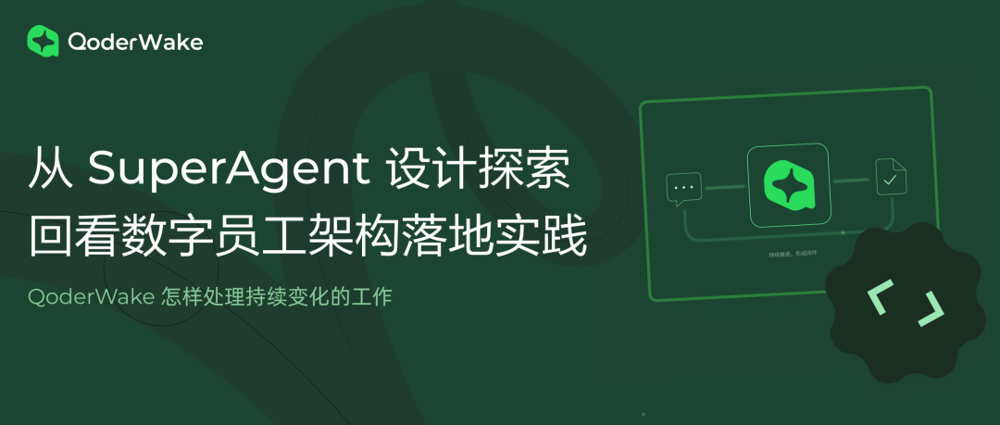
这几天，开发者社区开始讨论 SuperAgent。10 月 31 日，DeepSeek Harness 团队发布《Super-agent 设计探索：迈向更自主的 Agent 系统》，随后出现了围绕双层架构、事件驱动和长期运行的社区解读。
这次讨论把注意力放在 Agent 执行任务时的协调工作上。代码写完了，分析有了结果，工作却可能还没结束：用户补充了条件，又有新的反馈，原来的要求被修改，结果还要送回对应的工作入口。Agent 能承担更多具体执行，这些协调工作却仍可能占用人的大量注意力。
SuperAgent 探索的是更连续、高效、主动、持久的工作方式：跨工作入口保持上下文，后台执行时继续响应输入，根据环境事件推进工作，并通过状态管理和异常恢复支持长期运行。用户继续讨论手头的事，由系统管理会话、同步背景和安排执行。这也为回看 QoderWake 的技术选择提供了一个参照。
QoderWake 定位为数字员工，即时通信（IM）的单聊和群聊，是它与用户日常交互的高频场所。在 SuperAgent 文章发布前，QoderWake 已围绕这些场景中的任务管理与调度、多 Agent 协作和人类专家协助开展实践。它处理的也是同一个问题：信息和要求不断变化，一件工作怎样继续推进？
QoderWake 怎样处理持续变化的工作
企业群聊里，一件工作可能经过多次补充和调整，同一个群也可能同时讨论其他事情。聊天窗口主要按消息组织，用户发来新要求时，往往没有先选中对应的任务。数字员工需要先识别消息属于哪件事，才能用上新的信息，按最新要求继续工作。
QoderWake 将消息路由与具体执行分开。Task Router 理解意图、关联任务、选择执行者，也处理轻量直答；Work 层围绕具体任务工作。程序实现的 Task Coordinator 管理任务锁、队列、执行准入与生命周期。上下文和结果交付围绕任务组织，实际操作仍受权限约束；需要向人求助时，反馈也要接回原任务。
这些设计与 SuperAgent 的 Router／Worker 分工不谋而合，但两套系统的运行方式并不完全相同。在 QoderWake 中，这层分工具体落实到企业任务的管理、协作与交付，多轮连续性也被纳入内部评测。
理解这些选择，可以先从会话与任务的关系说起。
用户讨论工作，系统管理会话
以 Session 为中心使用 Agent，用户得记住工作在哪个窗口、哪些背景已经提供，还要把相关结论搬到另一个窗口。多开会话能够并行做事，会话之间的协调却往往仍靠人来完成。
SuperAgent 的双层架构尝试兼顾连续交互与并发执行：
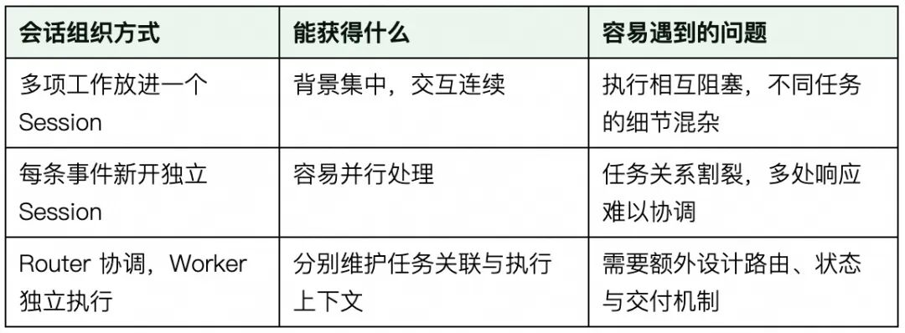
在这套设计中，Router 处理跨任务的高层关联和人类交互，Worker 在隔离的上下文中执行。Worker 内部仍可组织子 Agent 或Group，将关键结论汇报给 Router，由 Router 统一对外回复。
用户关心一件工作查到哪里了，无须记住执行细节存在哪个 Session。QoderWake 面对的企业群聊中，一件工作跨越多条消息，一个群也可能同时推进多项任务，因此同样需要将消息归属判断与具体执行分开。
一条补充、一句改要求，怎样影响正在执行的任务
下面从一个简化的数据导出失败情境，看看这些设计怎样支持一件工作持续推进。
Agent 正在分析一次数据导出失败，群里补进来一句：
只影响昨天新增的账户，旧账户正常。
它向业务专家求助，得到回复：
这批账户使用了新的权限配置。
发起人紧接着改了要求：
先不改配置，只补一份核查清单。
此时分析已经开始，专家回复来自另一次交互，群里还在讨论版本发布风险。新线索需要回到原分析，最新要求要约束后续动作，清单完成后还得送回最初的业务群。单独理解每句话并不难。系统需要一直保留它们与任务的关系，否则用户就得重新解释。
我们要处理的，是这里的三个断点：消息与任务能否关联，协作之后能否接续，结果能否回到原处。
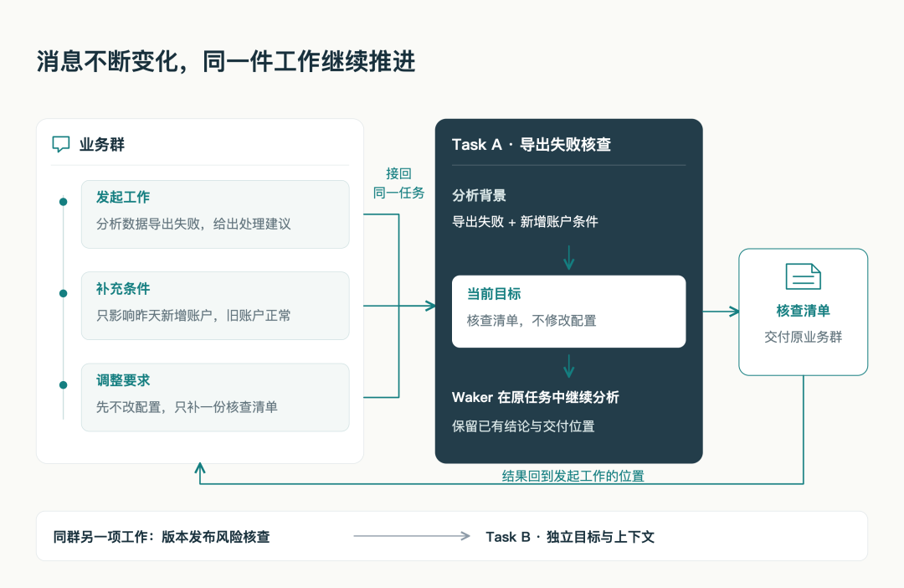
图 1｜企业消息与任务的连续推进
Router 分派工作，Task Coordinator 管理运行，Worker 推进任务
QoderWake 的 Task Router 负责理解意图、匹配任务、选择 Waker，也处理轻量直答。Work 层中的执行会话使用必要背景、专业能力、记忆和已授权工具，推进具体任务。
“只影响昨天新增的账户”要回到原来的排查任务，版本发布风险核查则应进入另一项工作。Router 据此判断消息是在发起新任务、补充信息、查进度，还是取消工作。意图不清楚时先澄清，需要执行时再分派。
对于新任务，Router 根据请求、Waker 的职责与能力以及业务规则选择执行者。已有任务的补充回到原 Task 和负责它的 Waker。数据分析、研发排查和测试核查可以分别组织，但这不意味着一个 Waker 只能处理一项任务。
任务交给谁，与现在能不能开始，是两件事。Task Coordinator 是程序实现的运行控制组件，负责锁、队列、执行准入以及状态、取消和恢复，不是第三个推理 Agent。
耗时分析交出去以后，消息入口可以继续处理新的输入。执行者只需了解自身任务相关的背景，无须理解群里的全部讨论。
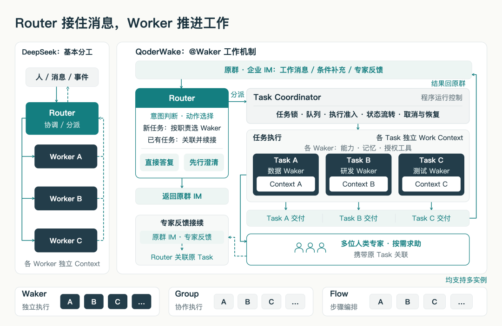
图 2｜QoderWake 的 Router / Worker 协作架构
这张图展示 QoderWake 的主要职责和流向。直接回复、澄清、专家反馈与工作结果有各自的处理路径，Waker Group 和 Waker Flow 也有自己的运行机制。执行始终受队列和容量约束，请求到达并不代表立即启动。
这里也能看到两套系统的差别。SuperAgent 原文让 Router 统一对外回复，QoderWake 按消息与工作类型安排回流。SuperAgent 还提出，Worker 订阅某个 Thread 后，后续事件由程序直接送达，以减少 Router 重复转发。
职责分工相近，具体实现仍需分别看待。是否采用订阅直通，取决于各自的任务关联和运行机制。共同需要判断的是：哪些关系还要由模型理解，哪些已经明确、可以交给程序处理。
Context 既要保留背景，也要反映最新要求
保存了完整聊天记录，仍然可能做错事。例如，报错、账户信息和专家回复都在，但“先不改配置，只补一份核查清单”没有影响正在运行的任务，旧执行就可能继续按原要求推进。
在单 Session 串行处理 @ 消息的 IM 接入中，新要求可能排队等到下一轮。将群里的所有新消息送进当前执行，又容易混入无关讨论。QoderWake 先判断消息的归属和作用，再选择处理方式：
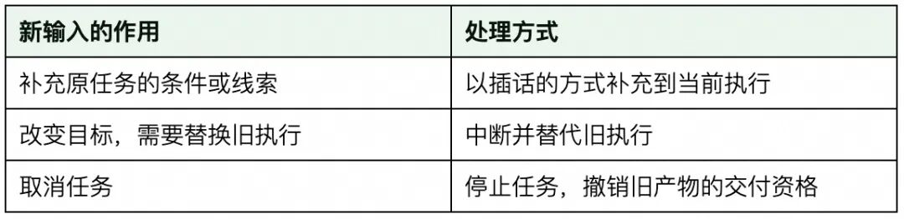
在运行时支持追加输入的情况下，补充信息可在工具调用之间的安全时机交给模型。
把信息接回原任务之后，还要让执行者知道当前按什么要求做。Context 需要提供当前要求与必要背景，并区分排查材料和任务指令的作用。取消能够停止后续执行、阻止旧产物交付，但不能撤销已经发生的外部操作。
SuperAgent 用 Inline & Spill 及链式召回讨论信息如何按需进入上下文：近期可能用到的信息直接提供，长内容和低频信息保留引用，需要时沿关联关系读取。
各角色需要的信息不同，Router 需要判断消息属于哪项任务，执行 Waker 需要继续推进具体工作。两者不必获得相同的全部背景。我们围绕这些职责，将 Context 的内容分成六组：
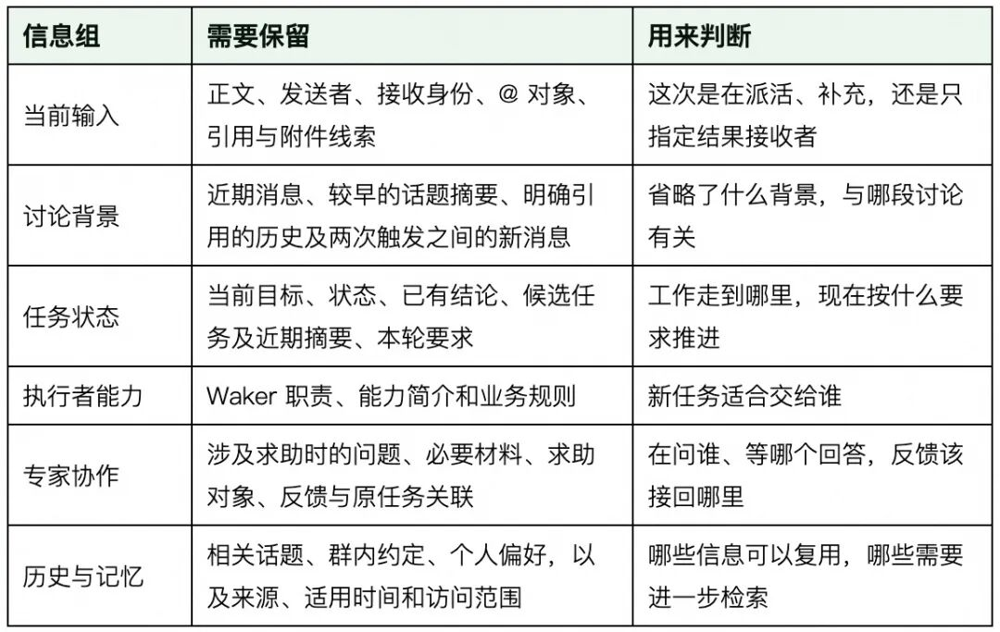
Router 用候选任务和近期摘要判断归属，执行 Waker 关注当前目标、已有结论和本轮要求。专家只需获得足以回答问题的背景，无须默认读取整个群的聊天记录。
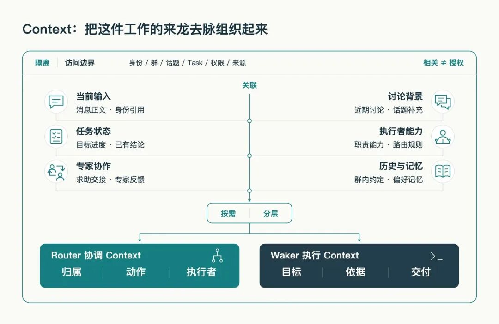
图 3｜面向任务的 Context 分层设计
这些信息遵循关联、分层、按需和隔离的原则：先确定属于哪件事，再区分角色所需，缺什么补什么，并始终守住访问范围。
历史和记忆按需取用，来源与适用时间也要核查。旧约定不能覆盖当前要求，内容相关也不能代替访问授权。向一位专家求助，不意味着可以读取他参与的其他讨论。
上下文是否发挥作用，可以看发起人改了要求以后，后续动作是否随之调整，而不只是看保存了多少信息。
数字员工怎样参与企业协作
任务能够持续推进之后，还要考虑数字员工怎样参与企业日常协作：哪些工作该由自己接手，哪些动作需要授权，缺少业务背景时怎样向人求助，以及需要多个角色参与时怎样组织工作。这些问题，决定了数字员工能否在帮上忙的同时，守住职责与权限的边界。
求助之后，原来的工作要能继续
企业工作的关键背景可能掌握在人手里。Agent 向专家求助时，需要保留问题与任务的关系，反馈回来后才能继续分析。
QoderWake 在求助中携带对应任务、明确问题和必要背景，反馈返回发起求助的任务与执行者。Router 判断它应该接回哪里，执行 Waker 判断它会怎样改变分析。不同问题可以请教不同专家，每次交接都保留与原工作的关系。
文中那句“这批账户使用了新的权限配置”，只有接回对应求助，才能成为这次排查的依据。否则，即使收到了信息，原任务仍然可能停在等待状态。
主动响应，先确认这是不是我的工作
群里有人说"导出又失败了，有谁能帮忙看一下吗"，如果排查属于数字员工的职责，可以成为主动响应的候选。但"请业务同事查一下，查完把结果发给 Waker"，是在指定结果接收者，不能因为提到了 Waker 就认领工作。
QoderWake 的群消息主动响应方案分三层判断：
程序检查来源、时效和明确的定向关系。
轻量模型初筛是否值得继续，不规划也不回复。
Router 结合群策略、响应身份和有限背景，确认职责与任务归属。
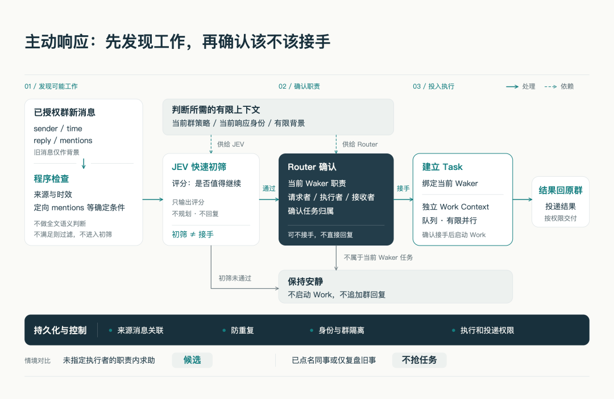
图 4｜主动响应的工作识别与接手判断
初筛不代表授权，评分也不能读成“该由当前 Waker 接手”的概率。未通过初筛，或 Router 判断不属于当前执行者，都应保持安静。确认接手后，工作进入独立上下文，按队列和并发约束执行。
这部分仍是需要检验效果与成本的设计方案。即使最终静默，筛选也会消耗资源。是否接手应以这次的新消息为依据，旧讨论只补充背景；定时任务与约定事件同样需要经过责任判断和权限校验。
权限约束，落实到实际能做的事
分析原因、整理清单和修改账户配置，需要的权限不同。理解了问题，并不意味着获得修改权限；讨论中有人提出建议，也不能当作授权。
QoderWake 将权限约束落实到数据访问、工具调用、实际操作和结果发送。允许、需要确认和不允许执行，各有相应路径：支持审批的场景请求确认，没有权限时说明限制或交由有权限的人处理。
历史消息、任务摘要和专家反馈都不能覆盖这些边界。等待、拒绝与中断有不同的处理机制，某类审批支持恢复执行，也不能据此推导所有操作都能自动续跑。
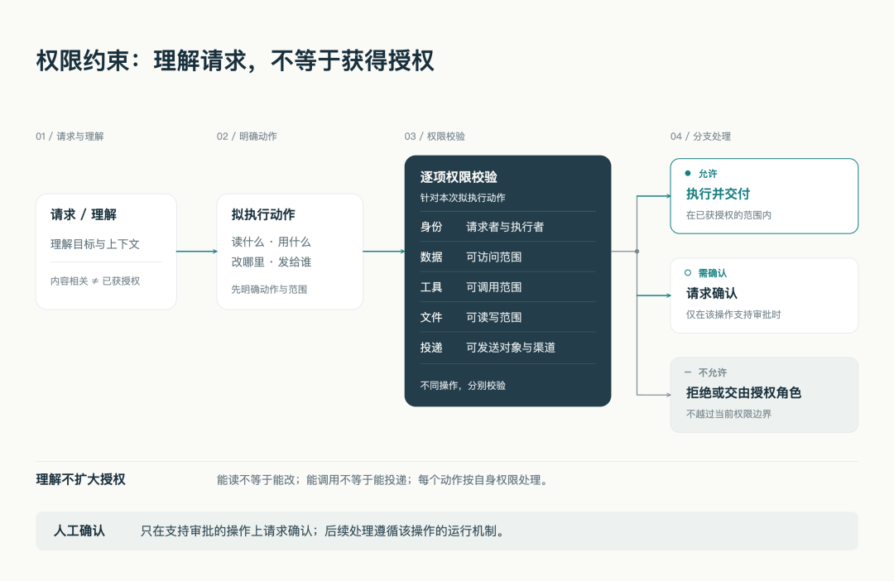
图 5｜执行与交付中的权限约束
多轮连续性提高了，其他指标也要一起看
单轮回答质量很重要，但无法覆盖上述断点。我们还要检查：补充信息有没有接回原任务，新要求有没有影响后续执行，该发出的回复有没有真正送到用户面前。
下图采用 QoderWake 2026 年 8 月内部评测报告。报告覆盖三类场景、合计 300 个脚本案例，这里选取普通 Waker 与 QoderWake（有 Router 的 @Waker 配置）的结果进行对比。任务完成与上下文利用由大模型对照金标评分，多轮连续性与投递结合执行证据，及时性按耗时规则计分。各维度采用 0—100 评分，不代表任务成功率；普通 Waker 的 0.00 是本次评测中的多轮连续性得分。
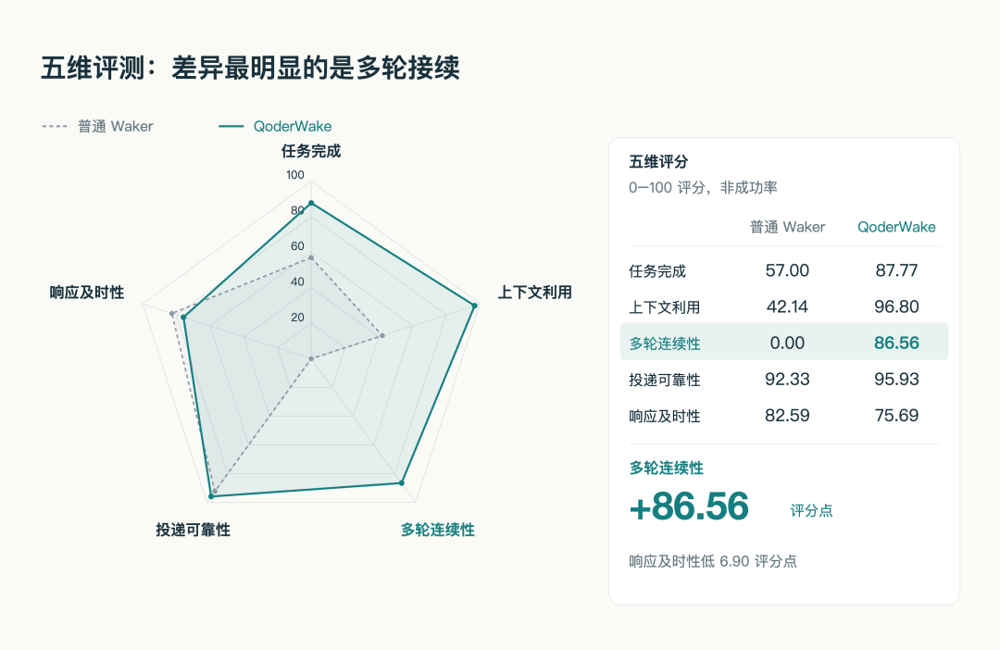
图 6｜普通 Waker 与 QoderWake 的五维评测
多轮连续性是最突出的差异：QoderWake 为 86.56，普通 Waker 为 0.00，相差 86.56 个评分点。QoderWake 在任务完成、上下文利用与投递可靠性上的评分也更高。在这组对照中，QoderWake 的及时性评分比普通 Waker 低近 7 个评分点。
这组结果反映的是两种整体配置的表现，不能将差异全部归因于 Router。连续性改善的同时，也要结合执行质量、交付可靠性和等待成本，判断是否满足业务要求。
独立执行、协作群组和流程，分别解决什么问题
路由确定了工作归属，具体怎样组织执行，还要看任务的依赖和确定性。
QoderWake 将消息路由与工作组织分开，用 Waker、Waker Group 和 Waker Flow 分别承载独立执行、角色协作与约定流程。
导出失败的初步分析，可以交给一个 Waker。需要业务、研发和测试共同评估时，用 Waker Group 组织协商与复核。核查形成固定步骤，并有明确的检查条件和人工确认点以后，则可以用 Waker Flow 承载约定。
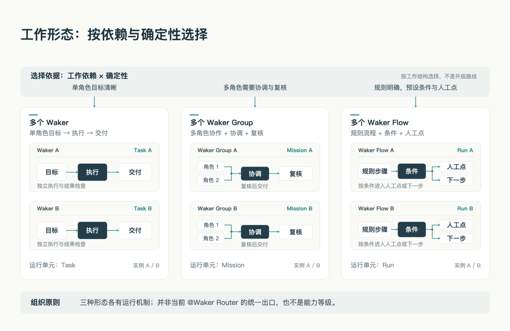
图 7｜Waker、Waker Group、Waker Flow 三种工作形态
三种形态都可以有多个实例，分别负责各自的任务、协作目标或流程运行。它们是工作组织上的选择，不代表能力等级。能独立完成的工作保持简单，存在角色依赖时再引入协作，已经确定的规则交给流程。
如果增加 Agent 以后，用户反而要连接更多会话，协调负担就没有减少。分工是否合适，要看实际的交接成本。
让Agent持续工作，让人回到判断与决策
设计持续工作的 Agent，先要分清模型与系统各自负责什么：变化的要求需要模型理解，任务归属、执行状态和授权范围需要系统维护。理清这层分工，再决定在哪里引入路由、协作或流程。
成为一名合格的数字员工，真正的挑战不只在于完成多少任务，更在于一件工作经过补充、调整和协作之后，能否继续按新的要求推进。单次回答再好，如果用户仍要反复找回任务、补讲背景和转达结论，协调的负担就没有真正减少。
从 QoderWake 较早开展的企业数字员工实践，到近期围绕 SuperAgent 的设计讨论，我们看到了一个值得共同努力的方向：让 Agent 不只完成一次回答，也能持续参与一件工作的推进。我们希望 QoderWake 接过更多执行与协调，让人把精力留给目标、取舍和关键决定。模型能力与工程实践都还在向前，接下来值得继续检验的，是这些进步能否真正减少日常工作中的协调负担，让工作更省心。